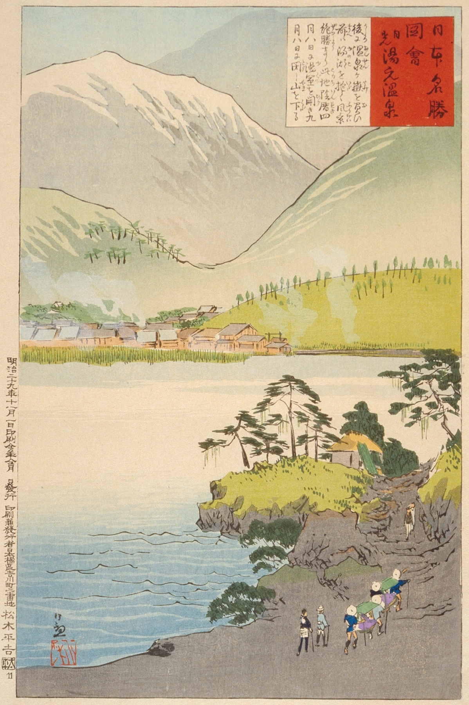
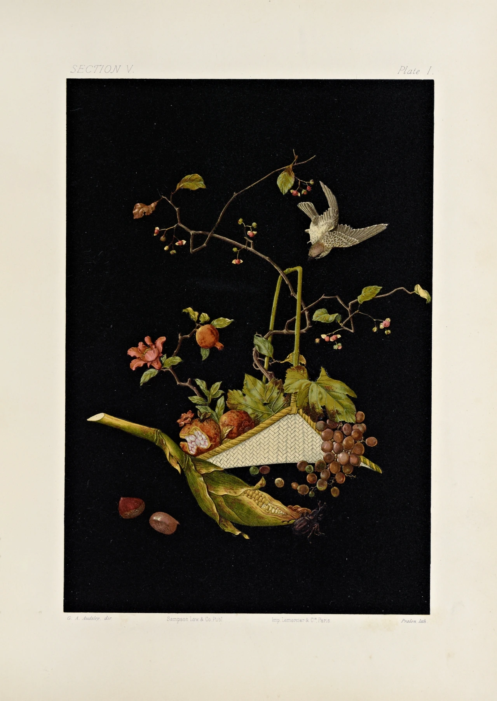
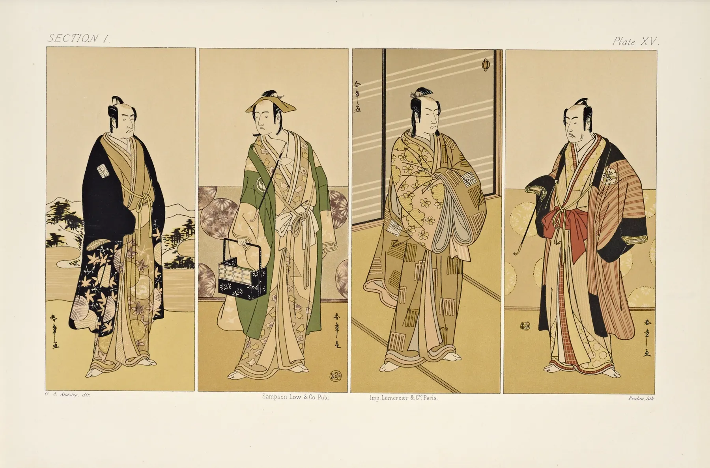
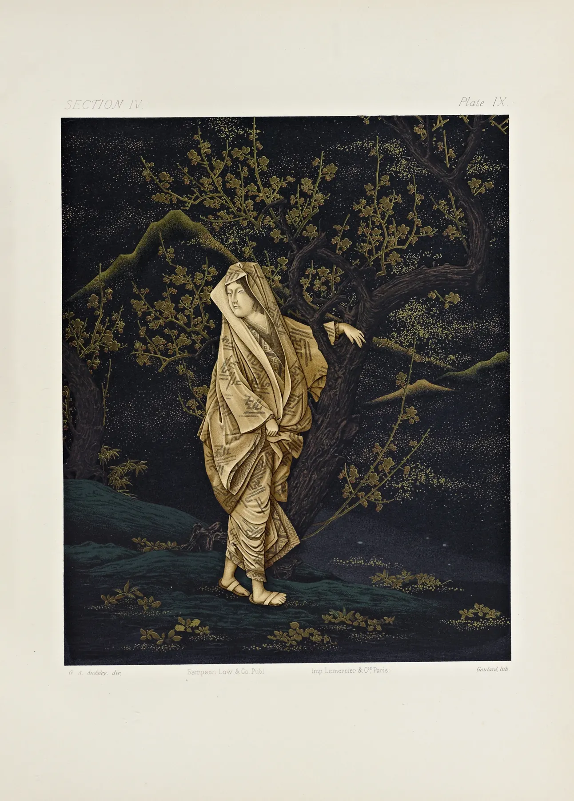
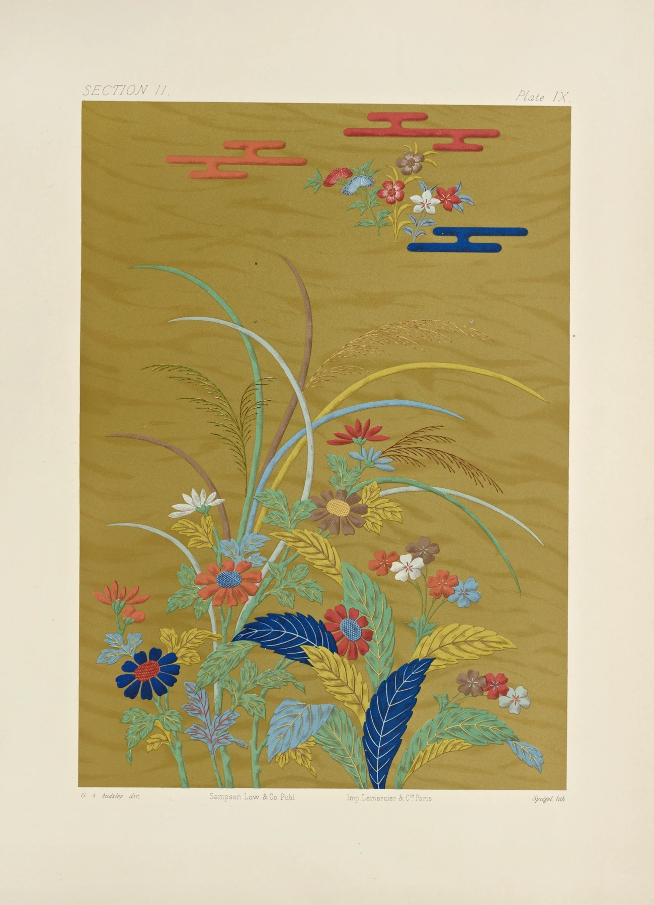

Värmland marknadsfördes under 1930-talet som ett "oförstört mecka" för turister, en beskrivning som förevigades på den klassiska reseaffischen från 1936. Vid den här tiden genomgick den svenska besöksnäringen en förändring där man ville locka internationella gäster med bilden av det genuina och natursköna Sverige. Affischen, som skapades av den inflytelserike formgivaren Anders Beckman, visar en kvinna i folkdräkt blickande ut över ett böljande sjölandskap, vilket perfekt fångade tidsandans längtan efter det pastorala.Detta budskap speglade en tid då järnvägen och de tidiga bilisterna började upptäcka landskapets djupa skogar och glittrande sjöar, som Fryksdalen och Klarälven. Genom att använda ordet "mecka" positionerade man Värmland som den ultimata destinationen för rekreation, kultur och friluftsliv, en bild av ett orört paradis som än idag präglar regionens identitet som turistmål.
I George Ashdown Audsleys praktverk The Ornamental Arts of Japan från 1882 utgör plansch 53
en
hyllning till den japanska cloisonné-emaljens finess. Genom den tidens mest avancerade
tryckteknik, kromolitografin, lyckades Audsley återge de djupa färgerna och de glimrande
guldinslagen som kännetecknade dessa exklusiva föremål. Planschen visar ofta detaljrika kärl
där
invecklade mönster av blommor och geometriska figurer binds samman av tunna metalltrådar,
vilket
skapar en visuell rikedom som fascinerade den västerländska publiken under sent 1800-tal.
Detta
verk var mer än bara en vacker bok; det fungerade som en bro mellan österländsk estetik och
västerländsk design. Under Meijiperioden nådde hantverket sin absoluta höjdpunkt i Japan,
och
Audsley dokumenterade dessa föremål med en noggrannhet som gjorde dem till förebilder för
den
växande japonismen i Europa. Plansch 53 fångar just den precision och det tålamod som krävs
för
att bygga upp lager av emalj, en teknik som förvandlade enkla metallföremål till lysande
konstverk med ett nästan magiskt djup.

I George Ashdown Audsleys praktverk The Ornamental Arts of Japan från 1882 utgör plansch 53
en
hyllning till den japanska cloisonné-emaljens finess. Genom den tidens mest avancerade
tryckteknik, kromolitografin, lyckades Audsley återge de djupa färgerna och de glimrande
guldinslagen som kännetecknade dessa exklusiva föremål. Planschen visar ofta detaljrika kärl
där
invecklade mönster av blommor och geometriska figurer binds samman av tunna metalltrådar,
vilket
skapar en visuell rikedom som fascinerade den västerländska publiken under sent 1800-tal.
Detta
verk var mer än bara en vacker bok; det fungerade som en bro mellan österländsk estetik och
västerländsk design. Under Meijiperioden nådde hantverket sin absoluta höjdpunkt i Japan,
och
Audsley dokumenterade dessa föremål med en noggrannhet som gjorde dem till förebilder för
den
växande japonismen i Europa. Plansch 53 fångar just den precision och det tålamod som krävs
för
att bygga upp lager av emalj, en teknik som förvandlade enkla metallföremål till lysande
konstverk med ett nästan magiskt djup.
Plansch 58 i George Ashdown Audsleys The Ornamental Arts of Japan fokuserar på den japanska
lackkonstens mästerliga finess, en disciplin som Audsley ansåg vara en av Japans mest unika
och
fulländade konstformer. Genom kromolitografins rika färgskala lyckas planschen förmedla den
silkeslena ytan och det taktila djup som kännetecknar högkvalitativt lackarbete. Motiven
centrerar ofta kring föremål som inrō eller skrivskrin, där tekniker som maki-e, konsten att
strö guld- eller silverpulver över vått lack, skapar gnistrande reliefer mot en botten av
djupsvart eller guldstänkt yta.
I denna illustration framgår tydligt hur de japanska hantverkarna
kombinerade teknisk perfektion med en poetisk naturkänsla. Scenerna på föremålen, ofta
föreställande stiliserade landskap eller växter, är inte bara dekorativa utan berättar
historier
om årstidernas växlingar och traditionell estetik. För den västerländska betraktaren under
sent
1800-tal blev planscher som nummer 58 en nyckel till att förstå den japanska idén om lyx,
där
skönhet inte bara låg i materialets värde, utan i den tid och det extrema tålamod som
krävdes
för att bygga upp lager på lager av lack till ett perfekt resultat.

Plansch 58 i George Ashdown Audsleys The Ornamental Arts of Japan fokuserar på den japanska
lackkonstens mästerliga finess, en disciplin som Audsley ansåg vara en av Japans mest unika
och
fulländade konstformer. Genom kromolitografins rika färgskala lyckas planschen förmedla den
silkeslena ytan och det taktila djup som kännetecknar högkvalitativt lackarbete. Motiven
centrerar ofta kring föremål som inrō eller skrivskrin, där tekniker som maki-e, konsten att
strö guld- eller silverpulver över vått lack, skapar gnistrande reliefer mot en botten av
djupsvart eller guldstänkt yta.
I denna illustration framgår tydligt hur de japanska hantverkarna
kombinerade teknisk perfektion med en poetisk naturkänsla. Scenerna på föremålen, ofta
föreställande stiliserade landskap eller växter, är inte bara dekorativa utan berättar
historier
om årstidernas växlingar och traditionell estetik. För den västerländska betraktaren under
sent
1800-tal blev planscher som nummer 58 en nyckel till att förstå den japanska idén om lyx,
där
skönhet inte bara låg i materialets värde, utan i den tid och det extrema tålamod som
krävdes
för att bygga upp lager på lager av lack till ett perfekt resultat.
Plansch 31 i George Ashdown Audsleys verk flyttar fokus till de japanska textilernas värld,
där
tyget inte bara betraktas som material utan som en duk för komplex mönsterkonst. Genom en
mästerlig användning av kromolitografi lyckas Audsley fånga de taktila kvaliteterna hos
tunga
sidentyger och praktfulla brokader. Illustrationen återger ofta fragment av tyger där
guldtrådar
och livfulla färgpigment skapar motiv av krysantemum, pioner eller tranor, balanserade med
en
asymmetrisk harmoni som var helt ny för det sena 1800-talets Europa.
Denna plansch blev en viktig
inspirationskälla för västerländska formgivare, då den visade hur naturens oregelbundenhet
kunde
omvandlas till sofistikerad design. Den noggranna återgivningen av vävtekniker som nishiki
blottlägger den enorma hantverksskicklighet som krävdes för att skapa dessa textilier, där
varje
tråd bidrog till ett narrativ om status och estetik. För Audsley och hans samtida var dessa
textilier beviset på att den japanska dekorativa konsten besatt en inneboende logik och
skönhet
som överträffade den rent industriella produktionen i väst.